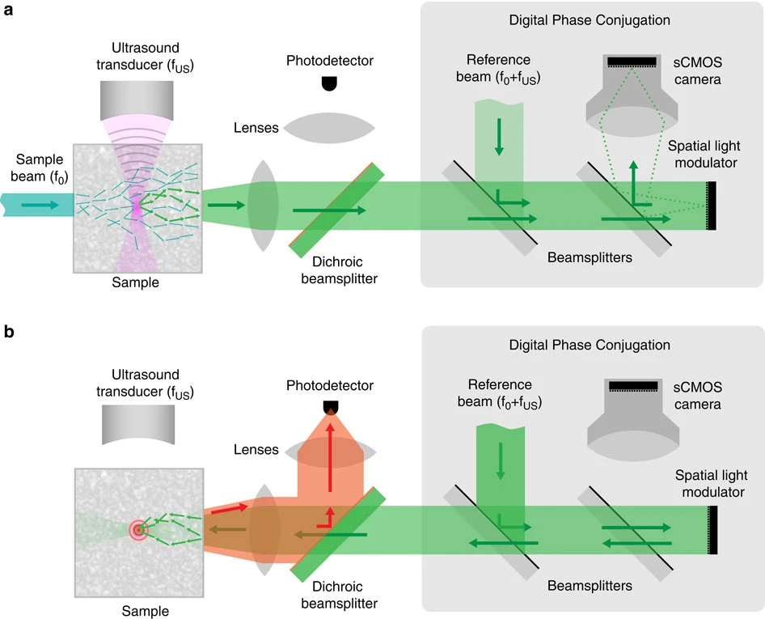
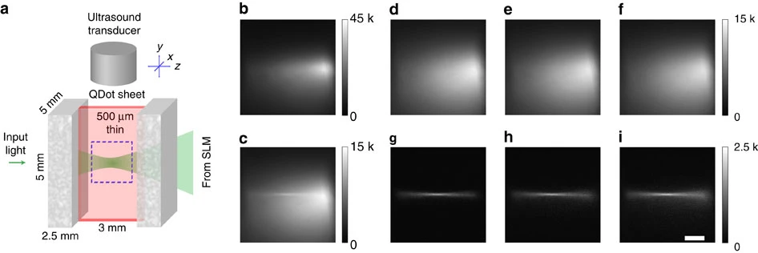
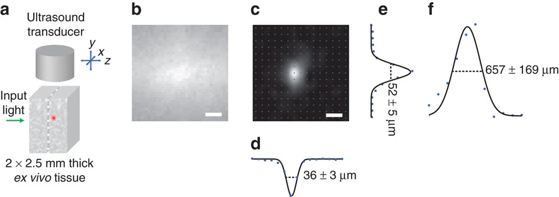
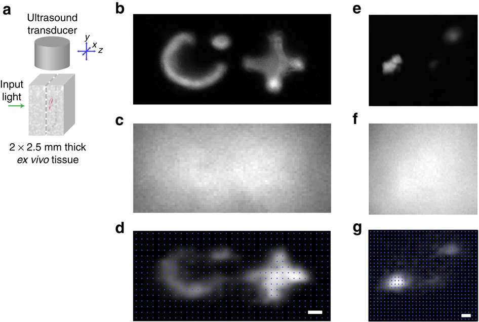
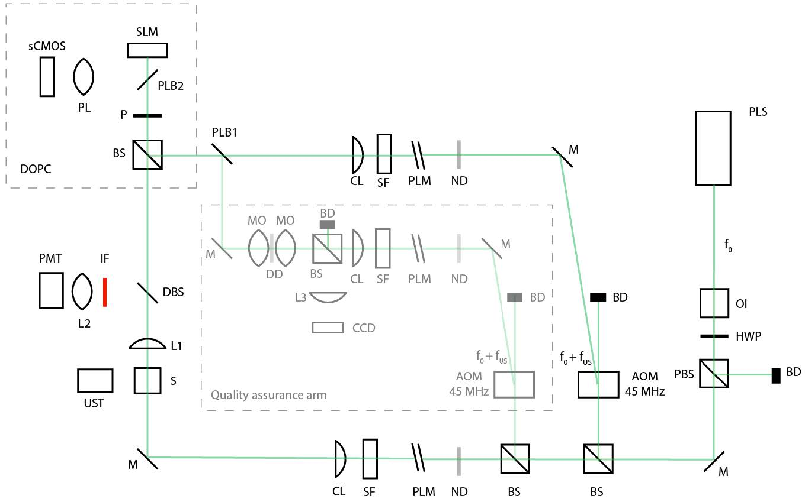
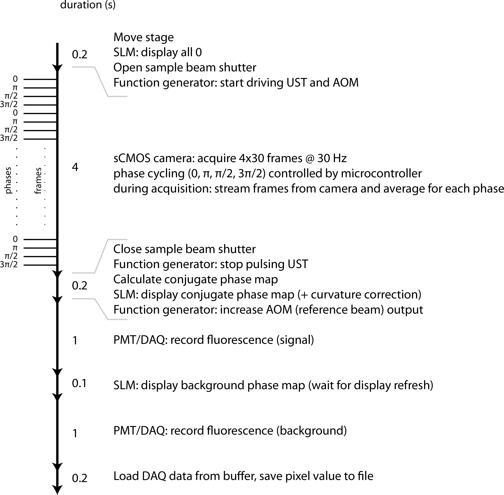

摘要
荧光成像是生物医学研究中最重要的工具之一．然而，在较厚的生物组织中，一旦超出弹道光传播（ballistic regime）范围，光散射便会严重限制成像性能．
本文中，我们通过对超声标记的光进行数字时间反演，实现了约 $5×10^5$ 的高光学增益，从而直接证明了在生物组织深部实现光学聚焦和高分辨率荧光成像的可行性．
我们还证明了，时间反转形成的光学焦点会不可避免地叠加在一层弥散背景之上，这是部分相位共轭所导致的结果，并在此基础上提出了一种能够动态消除背景信号的方法．
为展示该方法的潜力，我们在生物组织中前所未有的 2.5 mm 深度处，对复杂荧光结构和肿瘤类微组织进行了成像，获得了 36 μm × 52 μm 的横向分辨率和 657 μm 的轴向分辨率．我们的结果为在生物医学研究和医学诊断中开展多种深层组织成像应用奠定了基础．
1. 引言
在具有散射特性的生物组织内实现高分辨率荧光成像，是生物医学成像领域的核心目标之一．为了拓展光学成像的深度，人们已经付出了大量努力，提出了多种光学方法．
但到目前为止，聚焦激发荧光在本质上仍被限制在一个“传输平均自由程”（transport mean free path）以内，在大多数生物样品中大约为 1 mm．这是因为传统的聚焦方法将散射光视为噪声，只保留随深度呈指数衰减的弹道光分量．
然而，散射光本身携带着关于样品的重要信息，而这些信息实际上是可以加以利用的．当光穿过散射性样品时，其波前表面上似乎被完全随机化，但这种“随机化”实际上在物理上是确定性的，并且在时间上是对称的．
近年来，人们正是利用弹性散射的这些特性，通过迭代波前优化，以及利用光学相位共轭实现的时间反转等方法，将光重新聚焦在浑浊样品之后或其内部．在许多方面，这些方法与天文学中为抵消大气散射效应而采用的自适应光学技术是类似的．不同的是，天文学希望的是“看穿”一个浑浊介质（大气层），而生物医学成像的目标则是“在介质内部成像”．
为了实现在组织内部聚焦，Xu 等人提出了一个名为“超声编码的光时间反转（TRUE）”的方案，它将光学相位共轭与超声编码结合在一起．该方案的具体做法是利用在生物组织中，散射远弱于光的超声，通过声光效应在组织内部产生一个频率发生偏移的虚拟光源．由这一虚拟光源发出的散射光，再通过光折变晶体形成的相位共轭镜进行时间反转．作者通过对嵌入类组织体模中的毫米尺度吸收体进行线扫描，来推断是否形成了时间反转的光学焦点．
虽然这一技术在提升吸收对比度方面具有潜力，但要将其用于生物组织中的高分辨率荧光成像，在原理上仍面临重大挑战．由于超声调制效率很低，相位共轭镜必须提供比单位增益高出若干数量级的放大，才能激发出足够强、可被探测到的荧光．而传统基于光折变晶体的相位共轭镜，其增益通常远小于无法满足这一要求．
此外，还必须解决由于相位共轭不完全而产生的多余背景照明这一重大难题．若能实现完整的时间反转，TRUE 聚焦技术在概念上可以理解为：光子沿着原先的传播路径“倒流”回虚拟光源所在的位置．
然而，这种图像忽略了光的波动性：真正的完全时间反转要求我们在整个立体角范围内，对全部散射场的相位、振幅以及偏振实现全面精确的控制——这在本质上是不可实现的（见下文）．因此，即便光学系统完美对准，且散射波前的记录完全无噪声，时间反转形成的焦点也必然伴随着背景信号，而这些背景会淹没来自目标光学焦点的荧光信号．
什么是立体角？
平面上，绕任意点转一圈是 $2\pi$．
空间上，对应的概念称为“立体角”，整个球面对应 $4\pi$ 立体角，半个球面则为 $2\pi$ 立体角．
在此，我们提出了一种新的策略，通过将数字相位共轭与动态波前调控相结合来克服上述难题．实验中，我们直接成像观察到光学焦点的形成，并在高度散射的组织层之间激发荧光．
由此，我们证实了理论预言中背景信号的存在，而且这一背景可以被动态重现并加以扣除．借助这种数字背景消除方法，以及本技术所具备的高相位共轭增益和高分辨率，我们首次实现了在生物组织内部 2.5 mm 深处的聚焦荧光成像．
2. 结果
2.1 原理
我们用于实现时间反转光荧光成像的实验装置如 Fig. 1 所示．由于本方法的成像性能在很大程度上取决于可达到的分辨率、相位共轭镜的增益以及相位共轭的保真度，这几个参数值得单独加以讨论．

Fig. 1: 成像原理示意图．
(a) 在记录阶段，一束宽度为 0.8 mm 的样品光束（频率为 $f_0$）在组织样本中传播时发生散射．组织中一小块受限区域内的散射光在聚焦超声脉冲的作用下发生频移（$f_0 ± f_{US}$），从而在组织内部产生一个频率发生偏移的虚拟光源．频移光和未频移的光在组织中继续散射，并被收集出来．该输出波前与参考光束（频率 $f_0 ± f_{US}$）相干叠加，其形成的干涉图样被成像到数字相位共轭镜模块中的科学 CMOS（sCMOS）相机上．数字相位共轭镜通过数字移相全息的方法，选择性地提取并测量频移光的相位分布 $φ(x, y)$．记录完成后关闭超声．(b) 在回放阶段，将记录得到的相位分布的共轭 $−Φ(x, y)$ 显示在位于 sCMOS 相机像平面处的空间光调制器（SLM）上．参考光束从 SLM 反射后被转换为相位共轭光束，反向传播回组织内部，在超声调制的位置重新形成一个光学焦点．被该焦点激发产生的荧光由组织外部的光电探测器收集并加以测量．
当光在组织中传播时会发生散射，在超声焦点处形成具有散斑结构的光场．焦点内的这些散斑光通过声光效应被频移，从而在该区域产生一个频移光源（见 Fig. 1a）．由于我们的方法是选择性地记录并对这些频移光进行相位共轭，因此，由超声调制体积的大小来决定最终相位共轭光学焦点的空间分辨率．
我们采用了一个高数值孔径的聚焦超声换能器，其计算得到的焦斑横向宽度为 34 μm．为了进一步在超声传播方向上压缩超声调制体积，我们让超声源和激光都在脉冲模式下工作，使得只有当超声脉冲传播到目标调制体积时，光才进入样品（见方法部分；在超声传播轴向上的计算分辨率为 54 μm）．
在传统的相位共轭镜中，相位共轭光束的功率 $P_{OPC}$ 与信号光束的功率 $P_S$ 成正比．这个比例系数通常称为相位共轭镜的“增益”：
$$ G=\frac{P_{OPC}}{P_S} \tag{1} $$由于超声调制效率很低，而且超声焦点在整个散射波前上只占很小一部分面积，抵达相位共轭镜的散射光场几乎完全由未发生频移的光（频率为 $f_0$）构成，只有极小一部分是发生了频移、带有超声标记的光（频率为 $f_0 ± f_{US}$）．在我们的实验装置中，这部分被超声标记的频移光仅占总光功率的大约 $10^{-4}$ 数量级．
因此，要想在光学相位共轭焦点处激发出可检测到的荧光，就必须使用增益远远大于 1 的相位共轭镜．而以现有技术而言，即便采用了较为先进的相位共轭方案，传统的相位共轭镜也难以实现如此高的增益．
在我们的 DOPC（数字光学相位共轭）系统中，从装置中输出的相位共轭光功率只取决于参考光束的功率——也就是那束在显示相位共轭相位图的 SLM 上反射的参考光．因此，从原理上说，DOPC 的增益并不存在上限（见公式 (1)）．在实验中，我们在回放阶段调节参考光的强度，使系统获得大约 $5×10^5$ 的增益，从而保证相位共轭焦点处的能量足以激发荧光，而这部分荧光可以通过组织外的光电倍增管（PMT）收集并检测到．
从理论上讲，如果能够实现完全的相位共轭，超声焦点内的光场就可以无误差地被重建（见补充方法）．但在实际情况中，“完全相位共轭”这一假设并不成立——真实的相位共轭镜，无论是基于光折变晶体还是基于 SLM，其光学通光本领（etendue）都是有限的，只能截获输出波前的一部分．结果就是：只要是“部分相位共轭”，就不可避免会存在伴随背景信号．
在随机散射介质中，相位共轭焦点处的峰值强度与其伴随背景的平均强度之比，称为峰值-背景比（peak-to-background ratio），可以通过解析方式推导出来．按照 Vellekoop 等人的理论框架，我们发现，该峰值-背景比由两个参数决定：一是被相位共轭镜截获并时间反转的光学模数目 $N$，二是超声焦点中输入模的数目 $M$（见补充方法）．当散射光场的相位和振幅都被时间反转时——这一情形与传统相位共轭镜的使用条件类似——峰值-背景比为：
$$ PBR_{\text{phase\\& amplitude}} = \frac{N+1}{M} \tag{2} $$当仅对散射场的相位进行时间反转时——这种情况与我们采用 DOPC（数字光学相位共轭）的方法类似——在 $N$ 足够大时，其峰值–背景比为：
$$ PBR_{phase\ only} = \frac{\frac{\pi}{4}(N-1)+1}{M} \approx \frac{\pi}{4} \cdot PBR_{\text{phase\\&litude}} \tag{3} $$由于在真实的相位共轭系统中，$N$ 不可能无限大，相位共轭产生的背景光是不可避免的．在我们的实验装置中，$N$ 受两个因素限制：一是能够成像到 SLM 上的光学模数量有限，二是我们只测量并时间反转其中的水平偏振分量．
由此产生的弥散背景会在焦点之外激发荧光分子，从而在检测到的荧光信号中形成噪声．由于这种背景激发在空间上分布较广，其总量可能远大于焦点处的荧光，从而淹没有价值的焦点荧光信号——特别是在样品外部使用单通道 PMT 进行检测时．
我们在实验中证明，尽管这种背景确实相当显著，但可以通过对测得的相位共轭相位图进行数字处理，将其动态扣除．借助这种数字背景消除方法，我们得以在生物组织中实现高分辨率的聚焦荧光成像．
2.2 光学焦点的直接可视化
为了直接观察并表征由时间反转光形成的焦点，我们在两块离体鸡胸组织之间放置了一片光学透明的水凝胶薄片，其中夹有一层很薄的量子点层，每块鸡胸组织的厚度均为 2.5 mm（Fig. 2a）．当我们在不进行任何波前调制的情况下将光聚焦入组织（即在 SLM 上显示平坦相位）时，光在组织中发生强烈散射，无法形成清晰的焦点（Fig. 2b）．
相比之下，Fig. 2c 显示的是对经超声频移的光进行相位共轭后所激发得到的荧光：可以清楚地看到一束光锥在组织中收缩并汇聚到超声焦点位置，尽管叠加在明显的背景之上．综合量子点薄层的厚度（500 μm）以及预期的超声焦点尺寸（34 μm，见方法部分），我们得到的峰值-背景比约为 5.5．

Fig. 2: 在厚生物组织层之间实现光学聚焦的示例．
(a) 样品结构示意图：一层薄的量子点片夹在两块厚度均为 2.5 mm 的离体鸡胸组织之间．(b–d) 面阵相机拍摄的荧光发射图像，对应于 a 中蓝色虚线方框所示的 y–z 截面区域．(b) 在不进行波前调制的情况下（SLM 显示平坦相位），将光聚焦入组织所得到的漫射照明分布．(c) 对经超声标记的光进行光学相位共轭后得到的照明分布，可以看到叠加在弥散背景上的光学焦点．(d–f) 背景图像，以及 (g–i) 利用不同方法获得的对应“减去背景”后的结果图（仅显示正值）：(d, g) 通过将样品机械平移 5 μm 来破坏相位共轭；(e, h) 通过将相位图在数字上平移 50 个像素；(f, i) 将原始相位图划分为 8×16 个小区域，并在相邻区域交替叠加 0 或 π 的相位偏移进行调制（见方法）．比例尺：500 μm．
2.3 背景扣除
如上文所述，在相位共轭实验中无法对整个光场实现完全控制，因此在 Fig. 2c 中看到弥散背景是意料之中的．我们进一步发现，这种弥散背景主要集中在焦点附近．
类似的现象也曾在 Vellekoop 等人通过一层强散射的氧化锌颗粒实现聚焦的工作中被报道过．由于焦点中包含大量散斑（见上文），这一背景的存在会显著降低焦点处的对比度，从而对基于时间反转的光学聚焦构成关键挑战．
然而，在 DOPC（数字光学相位共轭）系统中，我们可以对相位共轭光场进行数字操控，从而生成一个与该背景非常相似的光场并进行回放，实现对背景信号的扣除．
要实现准确的背景扣除，首先需要更深入地理解这种背景在空间上局域化的成因．造成这种现象的一个可能原因，是散射透射矩阵中存在相关性．因此，就像光学相位共轭焦点的保真度一样，这种集中分布的背景是否存在，也会取决于样品与相位共轭光束之间的精确对准．
这里的“散射透射矩阵中的相关性”指的是介质中不同输入/输出通道之间散射的统计相关性，会影响透射场的空间结构．
另一种可能性是，观察到的背景来自目标区域附近漫射光在宏观尺度上的聚集．这种效应在高度前向散射的样品（如生物组织）中预计会更加明显，而且不会因为样品在微观尺度上的轻微错位而发生变化．
为了确定在我们的前向散射样品中，究竟是哪一种效应在主导背景的形成，我们将样品整体平移了 5 μm，然后重新播放位移前记录的相位图的共轭波前．如 Fig. 2d 所示，这一平移完全破坏了聚焦光斑，但对弥散背景几乎没有影响．从原始图像中减去这一背景之后，可以显现出一个对比度大幅提升的焦点（Fig. 2g）．
然而，对于大多数应用来说，通过机械位移来进行背景扣除并不现实．取而代之的是，我们可以在数字上修改记录到的相位图，使其模拟弥散背景光照．
为此我们采用了两种方法：其一是将相位图在数字上平移 50 个像素（Fig. 2e, h）；其二是将相位图划分为若干较大的子区域，并对其中相邻隔一个的子区域施加 $π$ 相移（Fig. 2f, i；见方法部分）．后一种方法与此前在双光子显微成像中使用的差分背景抑制技术有相似之处．由于数字平移可能给相位图引入不希望出现的不对称性，因此在后续所有实验中，我们都采用了第二种背景扣除方法．
需要指出的是，仅仅在 SLM 上显示一幅平坦相位图（如 Fig. 2b）并不能得到合适的背景图像．这种做法既无法适应超声焦点位置的变化，也不能补偿组织中的几何像差．
在每一个焦点位置都以这种方式进行时间反转并扣除背景之后，我们扫描了超声换能器的位置，并证实光学焦点会随超声焦点同步移动（补充视频 1）．
2.4 确定点扩散函数
为了测量点扩散函数并量化成像系统的分辨率，我们将一个充满荧光量子点的聚丙烯酰胺（PAA）小球（直径小于 20 μm）夹在两块离体鸡胸组织之间（Fig. 3a）．Fig. 3b 为该样品的落射荧光图像．由于该生物样品具有明显的前向散射特性（g = 0.965），小球的大致位置仍然可以推断出来．然而，组织散射会产生非常严重的模糊，使得高分辨率成像几乎不可能实现．
与此形成对比的是，Fig. 3c 显示了利用时间反转光获得的分辨良好的小球图像．为获得这幅图像，我们在 xy 平面扫描超声焦点，在每一个扫描位置（蓝点所示）通过相位共轭形成对应的光学焦点．在每一个扫描步进中，我们都通过动态数字相位图操作进行背景扣除．由于小球尺寸小于超声焦点，成像中小球的表观尺寸就可以用来有效估计该成像系统的三维分辨率．
沿各个方向的强度分布（Fig. 3d–f 分别对应 x、y 和 z 方向）用高斯点扩散函数进行拟合：在垂直于光传播方向的平面内，x、y 方向的全宽半高分别为 36±3 μm 和 56±5 μm；在光传播方向上（z 轴），全宽半高为 657±169 μm．上述不确定度均为拟合得到的 95% 置信区间．

Fig. 3: 点扩散函数的测定．
(a) 用于测量点扩散函数的实验装置示意图．一个荧光小球被嵌在两块厚度均为 2.5 mm 的离体组织之间． (b) 样品在 xy 平面上的落射荧光图像，可以看到由于组织散射产生了非常严重的模糊． (c) 通过在 x 和 y 方向扫描超声换能器的位置，利用时间反转光激发荧光，并按正文所述方法进行自适应背景消除后得到的荧光图像． (d–f) 荧光小球在 x（d）、y（e）和 z（f）方向上的轮廓．蓝点表示实际采集的数据点位置，数据点之间的像素为了显示效果采用双三次插值填充．比例尺：50 μm．
2.5 组织中嵌入复杂结构的荧光成像
我们通过对一个已知的复杂结构进行光栅扫描，来展示本系统在深层组织成像中的能力．我们在一片厚度为 500 μm 的 PAA 凝胶薄片中制备了一个由量子点构成的抽象 “CIT” 图案；PAA 是一种常用于制作超声体模的水凝胶．随后，将这片薄胶夹在两块厚度均为 2.5 mm 的鸡组织之间（Fig. 4a）．
Fig. 4b 显示的是该图案在尚未嵌入组织前的落射荧光图像．由于组织散射的存在，嵌入后的图案在落射荧光成像中已无法分辨（Fig. 4c）．相比之下，采用我们的方法可以清晰成像出 “CIT” 图案的细节（Fig. 4d）．

Fig. 4: 复杂结构的荧光成像．
(a) 样品布置示意图；(b) 抽象 “CIT” 图案的落射荧光图像；(c) 在样品上方覆盖 2.5 mm 厚生物组织后获得的落射荧光图像，图案已无法分辨；(d) 使用本成像系统对嵌入组织的 “CIT” 图案进行光栅扫描得到的图像；(e) 肿瘤微组织的落射荧光图像；(f) 在样品上方覆盖 2.5 mm 厚生物组织后获得的落射荧光图像；(g) 使用本成像系统对嵌入组织的肿瘤进行光栅扫描得到的图像．蓝点表示实际采集的数据点位置，数据点之间的像素为了显示效果采用双三次插值填充．比例尺：50 μm．
2.6 组织中嵌入肿瘤微组织的荧光成像
我们还对嵌入组织中的肿瘤微组织进行了成像．这些微组织被排布在一片厚度为 500 μm 的 PAA 凝胶薄片中，并夹在两块厚度均为 2.5 mm 的鸡组织之间．Fig. 4e 显示的是这些肿瘤微组织的落射荧光图像．将其嵌入离体组织后，用落射荧光成像已无法分辨这些肿瘤（Fig. 4f）．相比之下，采用我们的方法获得的图像中，肿瘤结构被清晰分辨开来，而且不同肿瘤之间荧光强度的差异也在图像中得到体现（Fig. 4g）．
3. 讨论
在生物组织中进行超过一个输运平均自由程的荧光成像，是生物医学光学领域最具挑战性的目标之一．本研究中，我们首次在弥散传播主导的条件下，利用超声标记光的时间反转，实现了具有焦点的荧光成像．我们搭建了一个具有高增益的 DOPC 系统，能够直接观察到时间反转形成的光学焦点及其伴随的相位共轭背景．借助 DOPC 在数字操控相位共轭相位图方面的能力，我们可以动态估计并扣除相位共轭背景对荧光信号的贡献；否则，这部分背景会淹没真正的焦点荧光信号．
利用这一技术，我们测量了系统的点扩散函数，得到横向分辨率具有各向异性，为 34 μm × 52 μm，轴向分辨率为 657 μm．进一步地，我们成功成像了嵌入离体组织、深度达 2.5 mm 的荧光目标，相当于约 75 个散射平均自由程，充分展示了该方法的成像能力．
正如我们的实验结果所证实的那样，垂直于光传播方向的成像分辨率由超声焦点体积决定．因此，可以通过采用中心频率更高、数值孔径更大的超声换能器来提升系统分辨率．不过，这里也存在一些可预期的权衡．高频超声在生物组织中的衰减更为严重，从而会降低可实现的超声聚焦深度．此外，更小的调制体积会进一步减少发生频移的光的数量，使得在相位测量过程中从强背景中分辨出微弱信号变得更加困难．
然而，这些问题有望通过更高速、更高动态范围的相机以及更先进的滤波方法来加以克服．
沿光传播轴方向的点扩散函数则受限于聚焦光锥的角扩展．由于角扩展取决于照明几何条件和组织散射特性，可以通过提高照明数值孔径，或者（看似反直觉地）选用更厚、散射更强的样品来改善该方向上的分辨率．最后，如果利用多光子激发效应，光传播轴向的分辨率还有望得到进一步提升．
我们估计，在时间反演焦点所在的平面上，真正集中到焦点内的能量不足 1%．这意味着其余约 99% 的能量分布在弥散的背景中，如果不作校正，这些背景会淹没焦点处的荧光信号．
对于荧光分布不均匀的样品，我们已经证明，动态背景扣除可以有效地把焦点荧光信号从背景激发产生的荧光中分离出来．
在某些应用中，例如光动力治疗，其目标是向焦点区域输送尽可能多的光能，因此往往希望进一步提高焦点峰值信号与背景之间的比值．提高峰值-背景比可以有两种途径：第一，通过增加空间光调制器（SLM）的像素数，来增大数字光学相位共轭（DOPC）系统所能控制的光学模态数 $N$；第二，通过减小超声焦斑的尺寸，来减小超声焦点区域内包含的光学模态数 $M$．
由于我们的方法基于光学时间反演，因此对样品的机械稳定性有较高要求．也就是说，每个像素的采集周期应当快于，或至少与组织散斑去相关时间处于同一量级．
在离体实验中，这一条件很容易满足：我们目前的单像素采集时间为 6.7 s，短于样品的去相关时间 41 s．对于在体应用，去相关时间通常要快得多：已有文献报道的数值从毫秒量级到秒量级不等，具体取决于组织类型以及固定方式．对于这类应用，就需要相应缩短单像素的采集时间．
我们预计，随着更高速的空间光调制器（SLM）以及速度更快、动态范围更高的相机不断发展，这一点最终是可以实现的．
在我们所有实验中，样品处激光束的辐照度均小于 10 mW/mm²．若要满足临床安全标准（2 mW/mm²），则需要降低激光功率，或增大光束直径．
综合来看，这些改进最终有望支持广泛的在体应用，包括分子成像、早期癌症诊断、光动力治疗，以及在深部组织中对光遗传学工具的靶向激发．
4. 方法
4.1 样品准备
将冷冻的体外鸡胸肌组织切成厚度为 2.5 mm 的薄片，并嵌入装有 10% 聚丙烯酰胺（PAA）凝胶的石英玻璃开口比色皿中．该比色皿四个侧面均经抛光处理（Starna Cells, CA）．测得组织切片的散射系数为：
$$ \mu_s = 30\ \mathrm{mm}^{-1} $$利用文献中先前报道的各向异性因子 $g=0.965^{41}$ ，可计算得到其约化散射系数：
$$ \mu_s' = \mu_s (1-g) = 30\ \mathrm{mm}^{-1} \cdot (1-0.965) \approx 1.05\ \mathrm{mm}^{-1} $$该结果与文献中广泛引用的约 $1mm^{-1}$ 的近似值一致．
PAA 凝胶由以下组分聚合制备：4 ml 磷酸盐缓冲盐水、1.5 ml 丙烯酰胺、0.4 ml 双丙烯酰胺、62.5 μl 过硫酸铵以及 25 μl 四甲基乙二胺．含量子点的 PAA 微球（Qtracker 655 Non-targeted Quantum Dots，Invitrogen）采用基于 Beningo 和 Wang 报道的反胶束方法并加以改进制备而成，水相中量子点的初始浓度为 200 nM．所得微球粒径不一，随后通过 40 μm 细胞筛网（Biologix, USA）进行过滤分级．所有实验中所使用微球的实际尺寸均通过荧光显微镜观察确定．
“CIT” 结构是通过在 SU-8 模具上聚合一层厚度为 500 μm 的透明 PAA 凝胶制备的（模具由本实验室设计，在 Stanford Microfluidics Foundry 制造）．随后，将含量子点的 PAA 凝胶（Qtracker 705 Non-targeted Quantum Dots, Invitrogen）填充到透明 PAA 凝胶中的图案凹槽内，水相中量子点的初始浓度为 1 μM．
肿瘤类器官（癌症微组织）由 HepG2 细胞采用悬滴法制备，并从 InSphero AG（瑞士）定制获得．球状微组织先用 2% 多聚甲醛（Sigma-Aldrich, USA）固定，再用 50 mM 磷酸盐缓冲盐水（Thermo Scientific, USA）清洗，随后用 0.1% Triton-X 100（Sigma-Aldrich, USA）进行透化，最后用 DY-521XL 长 Stokes 位移 NHS 酰染料（Dyomics, Germany）进行染色，该染料可与癌症微组织中的蛋白质结合．染色液的浓度为 14 nM．通过与已知荧光团浓度的标示结果对比，我们估算肿瘤中最终的染料浓度约为 5 μM．肿瘤微组织经排布后嵌入在一块厚度为 500 μm 的 PAA 凝胶薄片中．
4.2 样品散射系数的测量
鸡组织的散射系数采用 Mach–Zehnder 干涉仪进行干涉法测量．由于只有弹道光（未发生散射、保持相干的直达光）才能与参考光束产生显著干涉，因此，通过比较样品光路中有样品和无样品时干涉条纹振幅的减弱程度，即可反推出组织的散射系数．
4.3 装置
文中所有数据均通过一套自行搭建的实验装置获取，其示意图见补充图 S1．光源为一台 2.7 W、波长为 532 nm 的 Q 开关激光器（Navigator, SpectraPhysics, USA），脉冲重复频率 20 kHz，脉冲宽度 7 ns，相干长度约为 7 mm，工作在光学频率 $f_{0}$．激光依次通过光隔离器和固定衰减器后，被分成参考光束和样品光束两路．
样品光束先经中性密度滤光轮进一步衰减，再通过一段长度为 20 cm 的单模光纤（Nufern 460HP）进行空间滤波，随后被准直到光斑腰径约为 0.8 mm 的平行光束，并射入装有样品的比色皿中．样品处的面照度约为 $\sim 10\ \mathrm{mW\ mm^{-2}}$．
需要指出的是，该照度高于 ANSI 针对皮肤照射的标准值 $2\ \mathrm{mW\ mm^{-2}} $．
然而，我们认为在实际应用中降低激光功率并不存在根本性的技术障碍，因此这并不是本方法的固有限制．
在样品内部，部分光在超声换能器的作用下发生频移，其频率被移到：$f_0 + f_{US}$．超声换能器型号为 V3330（Olympus NDT, Olympus, USA），单元尺寸为 6.35mm，焦距为 6mm，工作频率为 $f_{US}=45 MHz$．
为了在超声传播方向上获得尽可能高的分辨率，换能器采用短脉冲驱动：脉冲长度为 1 个 45 MHz 周期，驱动电压为 55 V 峰–峰值．脉冲由激光器的 Q 开关信号触发，并在固定延时后送至换能器，使得超声脉冲在其焦点处与激光脉冲时间上相重合．为减小带有超声标记的光与未标记光之间产生相干效应对探测的影响，我们在触发延时上引入了 ±5.5ns 的抖动（具体见补充方法）．
为在样品内部扫描超声焦点，将换能器安装在一台三轴计算机控制的微操纵器上（Sutter Instruments, USA）．样品透射出的散射光束与参考光束重新合束．参考光束为水平偏振光，同样通过声光调制器（AFM-502-A1, IntraAction, USA）被移频 $f_{US}$．合束后的光束依次通过一块水平取向的偏振片和另一块分束器，最终照射到一块纯相位空间光调制器（phase-only SLM，vis-PLUTO, Holoeye, Germany）表面．该 SLM 被精确成像到一台高动态范围 sCMOS 相机（pco.edge, PCO AG, Germany）的像面上，并实现了 1:1 的逐像素对应．用于将 SLM 成像到 sCMOS 相机上的镜头像差较小，采用的是商用复合镜头 Micro-Nikkor 105 mm f/2.8（Nikon）．
与 Cui 和 Yang 首先报道的 DOPC 系统相比，我们改进后的 DOPC 系统将 SLM 的像素直接成像到相机像素上，从而显著提高了对准的可靠性，并便于进行日常的成像质量校准（见下文）．由于成像光路中需要通过一块分束镜进行反射，我们选用了片式分束镜（plate beamsplitter，High-Energy Nd:YAG 50/50，Newport Corporation, CA），并使其反射面同时朝向 SLM 和相机，以减少像差并确保精确对准．
4.4 SLM 曲率补偿
DOPC 的可靠性不仅依赖于 SLM 与相机间的精确像素对准，还强烈依赖于 SLM 本身的曲率以及参考光束的像差．这两类误差都可以通过数字方式加以补偿：具体做法是为 SLM 求得一幅“补偿相位图”，使其在显示时对参考光束实现时间反演．
由于时间反演后的光束会沿原路返回并再次通过空间滤波器（即单模光纤），我们以“回到单模光纤中的光功率”为优化指标，通过调节补偿相位图，使得返回光经单模光纤输出的光功率最大化（由光电二极管测量）．这样得到的相位图即可用来补偿 SLM 曲率和参考光束像差．
4.5 相位记录
在每一个扫描位置上，相位记录通过相移数字全息系统实现．具体做法是：将超声脉冲依次设置为四个相位：
$$ (0、π/2、π、3π/2) $$在每个相位下，以 30 帧/秒的速率记录 10–30 帧图像，并对同一相位下的多帧图像取平均，得到四幅强度分布图：$I_0$、$I_{\pi/2}$、$I_\pi$ 和 $I_{3\pi/2}$．随后根据：
$$ E = (I_{π/2} − I_{3π/2}) + i(I_0 − I_π) $$重建复光场 $E$，并按 $\Phi = tan^{-1}\frac{Re(E)}{Im(E)}$（或简记为 $\Phi = Arg(E)$）计算相位分布图 $\Phi$．
为尽量减小参考光慢相位漂移带来的伪影，我们在采集强度图时采用交错方式：sCMOS 相机（曝光时间 28 ms，帧率 30 Hz）连续获取的每四帧图像作为一组，在同一组内依次切换四个相位，从而完成四种相位的循环．
为保证相位循环与帧间切换足够迅速，我们使用任意波形发生器（AFG 3252，Tektronix，美国）产生两路输出信号（频率 45 MHz 的正弦波，初始相位分别为 $0$ 和 $π/2$），再分别通过 RF 180° 功分器（Mini-Circuits，美国）进行反相，从而得到四路相位互差 90° 的信号．一个微控制器板（Arduino，意大利；购自 SparkFun Electronics，美国）连接至 RF 开关（Mini-Circuits，美国），按预设程序在每一帧图像曝光期间选择对应的相位，与 sCMOS 相机的帧采集同步．
在整个相位记录过程中，SLM 始终显示一幅平坦的相位图（相位值均为 $0$）．在上述设置下，每个像素（扫描位置）的完整采集周期约为 6.7 s．关于各步骤的详细时间安排参见补充图 S2；关于相干长度是否会限制散射光子探测的分析参见补充图 S3．
在相机上获得的一幅典型超声标记相位图中，包含约 $N = 8×10^4$ 个独立模．这里 N 是由“传感器的有效成像面积 / 散斑自相关面积”得到的估计值．结合对 M 的估计（M 为超声焦点内的散斑数量，约为 $1–2×10^3$），代入公式 (3)，可以得到峰值与背景比的上限约为 60．
4.6 利用时间反转光激发荧光的检测
时间反转光束是通过让空白参考光束反射到加载了测得相位共轭图的 SLM 上获得的．由该时间反转光学焦点激发产生的背向散射荧光，经二向色镜反射后，由单通道 PMT 探测．根据所用荧光探针不同，在 PMT 前配置相应的带通滤光片：
- 对 Qtracker 655 使用 Semrock 650-40 滤光片；
- 对 Qtracker 705 使用 Semrock 710-40 滤光片；
- 对 DY-521XL 长 Stokes 位移 NHS 酯染料使用 Semrock 675-67 滤光片．
4.7 DOPC 系统的质量控制
由于本系统对精确光路对准、机械稳定性以及低漂移高度敏感，我们在主光路旁增设了一条平行的样品光路，用于对装置的日常性能进行评估和监控．
该平行光路由磨砂玻璃散射片和一台额外的观测相机组成，其结构类似于我们课题组此前用于展示相位共轭抑制浊度的实验装置．
4.8 散斑去相关时间
在打开样品光束的条件下，我们以 1 帧/秒的速率，在 sCMOS 相机上采集散斑场图像，共采集 180 s．随后计算第一帧与之后每一帧之间的相关性，并将相关性下降到小于 $1−1/e$ 所对应的时间定义为散斑去相关时间．
5. 补充材料

Fig. S1: 光路示意图
缩写：脉冲激光光源（PLS）、光学隔离器（OI）、半波片（HWP）、偏振分束棱镜（PBS）、光阱（BD）、反射镜（M）、50/50 立方体分束器（BS）、声光调制器（AOM）、中性密度滤光轮（ND）、光程匹配臂（PLM）、作为空间滤波器的单模光纤（SF）、准直透镜（CL）、样品（S）、超声换能器（UST）、焦距为 50 mm 的平凸透镜（L1）、二色分束镜（DBS）、干涉滤光片（IF）、焦距为 25 mm 的平凸透镜（L2）、光电倍增管（PMT）、偏振片（P）、90/10 板式分束器（PLB1）、数字光学相位共轭系统（DOPC）、50/50 板式分束器（PLB2）、照相机复合镜头（PL）、sCMOS 相机（sCMOS）、空间光调制器（SLM）、焦距为 300 mm 的平凸透镜（L3）、显微物镜（MO）、散射片（DD）．

Fig. S2: 采集时序示意图
缩写：空间光调制器（SLM）、位于样品光路中的超声换能器（UST）、位于参考光路中的声光调制器（AOM）、光电倍增管（PMT）、数据采集设备（DAQ）．在相机连续曝光（逐帧采集）过程中，相位在 0、π、π/2 和 3π/2 之间循环切换．对应各个相位的帧分别进行平均，将每个相移对应的平均数据用于计算相位图．每个数据点的总采集时间为 6.7 s．